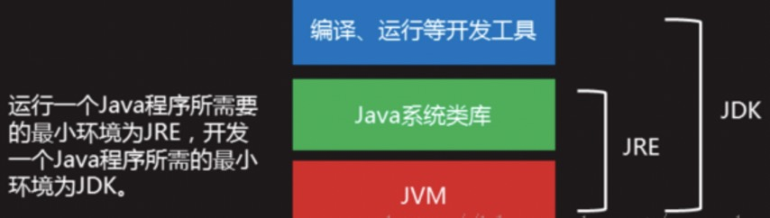
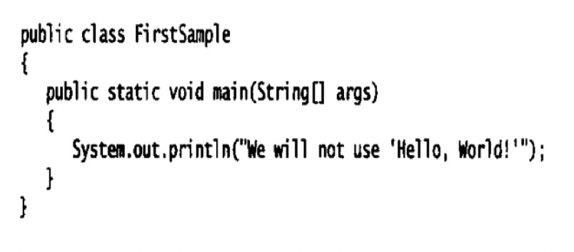
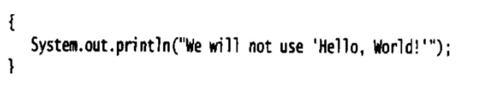
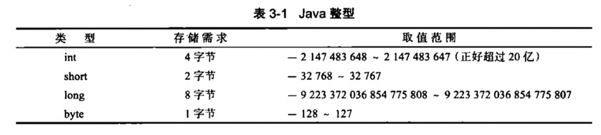
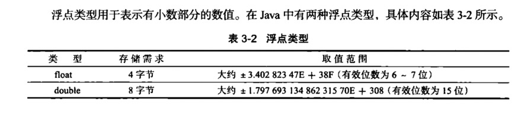
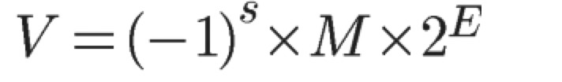
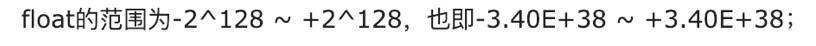
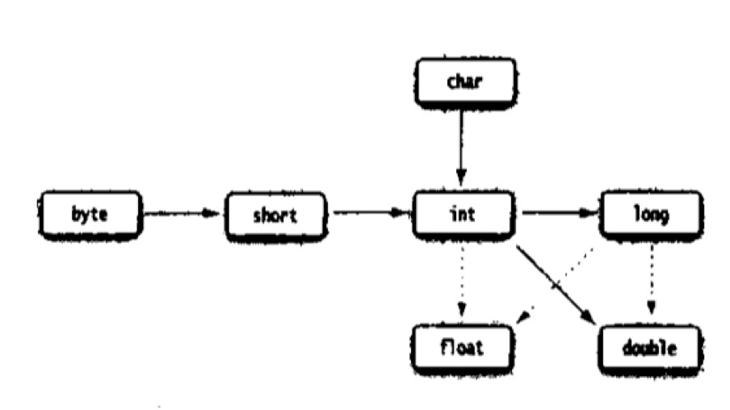
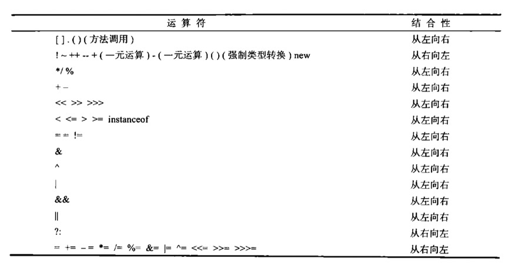

前言
本篇文章主要总结了JAVA环境、命名规则、通用语法、基本数据类型和数据类型的转换以及字符串的基本知识
第一章 JAVA基础
1.JAVA环境

jdk比jre多了，javac（编译）、java（运行）、jar（包管理）等工具
- 为什么要配置path变量?
因为不配置的话java程序只能在java目录里面的bin目录下运行java程序，配置path变量后即可全局运行java程序。
2.命名
| 类型 | 包 | 类 | 方法 | 常量 |
|---|---|---|---|---|
| 一个单词 | 全小写 | 首字母大写 | 全小写 | 全大写 |
| 多个单词 | 全小写 | 每个单词首字母大写 | 第一个小写后面首字母大写 | 全大写中间用_ |
3.JAVA程序

- java对大小写敏感
- public——访问修饰符（Access modifier）
class 紧跟类名 （驼峰命名） - 源文件必须和公共类名相同，并用.java作为扩展名
- 运行编译程序时，虚拟机从指定类的main方法开始执行，所以类的源文件中必须包含main方法

4.JAVA的通用语法
object.method.(parameters)
- system.out.println 自动换行
system.out.print 不换行
JAVA规范参考官方文档
5.反码补码
| 类型 | 正数 | 负数 |
|---|---|---|
| 反码 | 原码相同 | 除符号位逐位取反 |
| 补码 | 原码相同 | 反码+1 |
- 机器运算时用的都是补码
6.数据类型
1.整型

| 类型 | 取值 |
|---|---|
| byte | -128~127 |
| short | -2^15~2^15-1 |
| int | -2^31~2^31-1 |
| long | -2^63~2^63-1 |
解释为什么负数比正数多1
以byte为例，一个字节8位，一位符号位，剩下7位来表示数字，最大即为
01111111=127，负数最小为11111111=-127
但是00000000（正零）和10000000（负零）补码都是0，所以使用补码可以多出来一个值来表示最小值，所以10000000
这个时候的1即表示正负也表示数字，用来表示最小值-2^7=-128
注意：JAVA整形范围和机器无关（与C/C++不同）不用考虑处理器和平台。
解释为什么机器用补码
计算机辨别正负号会让电路设计变得很复杂，于是根据1-1 = 1 + (-1) = 0 想到了可以都用加法表示，但是原码做会出现错误，反码又无法解决-0的问题（10000000和00000000的反码不一样，即要用两个编码表示0）所以出现了补码，既解决了-0的问题，又多出来一个编码来表示最小数，
详见相关博客
- 前缀后缀
| 类型 | 前后缀 | 示例 |
|---|---|---|
| 长整型 | 后缀L | 如 400000000000000000L |
| 八进制 | 前缀0 | 如010对应8 |
| 十六进制 | 前缀0x | 如0xCAB9 |
| 二进制 | 前缀0b | 如0b1001 |
注意：JAVA没有无符号类型
2.浮点类型

机器存浮点数也是存二进制，但是很多十进制小数转换为二进制是无限循环的，这时候就有了二进制科学记数法，
举个例子：十进制浮点数1.8125的二进制形式为1.1101 用二进制科学计数法可以表示为1.1101 2^0，既有效数字（尾数位）2^指数位
那么可以推出任意一个二进制浮点数V可以表示成下面的形式：

（1）(-1)^S表示符号位，当s=0，V为正数；当s=1，V为负数。
（2）M表示有效数字，大于等于1，小于2。
（3）2^E表示指数位。
详解博客
指数位决定范围，尾数位决定精度
float四字节 32位=1bit（符号位）+8bits（指数位）+23bits（尾数位）

double八字节 64位=1bit（符号位）+ 11bits（指数位）+ 52bits（尾数位）
尾数位可以表示的十进制数字精度：
2^23=8388608，所以有效数字是七位，但是只能保证6位，因为7位表示不了全部。如8388609应该表示为838861。
因为float只能保证6位有效数字，一般不够用，所以大部分用double，用float时后面加F
3.char型
“A”与’A’不同，前者是字符串，后者是字符常量
1991年发布Unicode1，用16位来表示各国的字符，但是很快65536个不够用了。
4.boolean型
在JAVA中，布尔型变量和整型变量不可以相互转换。
（1，0）
5.变量
- 变量最好逐一逐一声明，提高程序可读性，不要一行声明多个。
- 变量名对大小写敏感
- JAVA中变量声明可以在任何地方，最好放在第一次使用的地方。
6.常量
- JAVA中用final关键字指示常量
- final表示这个变量只能被赋值一次，赋值后就不能更改了，常量名一般全大写，如：
1 | final double CM_PER_INCH = 2.54; |
- 如果希望一个常量在类中多个方法使用，用类常量，关键字static final。如：
1 | public static final double CM_PER_INCH = 2.54; |
注意：类常量定义在main外部，并且如果常量被声明位public，那么其他类也可以用这个常量
7.运算符
- 浮点数要保持可移植性很难，因为java的double是64位，可是在80位的处理器上的复杂运算中，运算结果虽然更精确并且避免溢出，但结果可能和64位，不一样，所以java最初采用截断的方式，但遭到了反对，最后改为允许中间计算结果采用扩展的精度。
- 如果需要原来的方法（可能会溢出并且运算速度慢，但是可移植性强，在不同处理器结果一样），要在方法或者类前加strictfp来进行浮点运算，如：
1 | public static strictfp void main (string[] args) |
8.关系运算符
- 和c一样
- java支持三元操作符？：
如 x>y ? : y
condition 为真计算表达式1，否则计算表达式2
9.数学函数
Math类中有各种数学函数，如：
- 平方根 Math.sqrt()
- 幂运算 double y = Math.pow(x,a) 表示x^a赋值给y,pow两个参数都是double型
- 三角函数 Math.sin Math.cos
- Math.PI Math.E
表示π和e的近似值
不用再数学方法名常量名前添加Math ，只要在源文件顶部加上：
1 | import static java.lang.Math.*; |
10.数据类型转换

虚线表示可能会有精度损失
int–>float
int可以表达的整数位数比float多，所以可能有精度的损失
long–>float
long–>double
- 两个类型进行二元运算时，要先转化为一个类型在进行计算
- 两个操作数有一个是double型时，另一个转化为double型
- 没有double时，但有一个是float型时，则另一个转化为float型
- 既没有double，也没有float型，但是有long型时，另一个转化为long型
- 都没有的话，转化为int型
11.强制类型转换
必要的时候int型会自动转化为float型，但有时候也需要把float转化为int型，这时需要强制类型转换，如：
1 | double x = 1.2223333; |
y的值则为1
当需要取整取最近似的整数时，可以用Math.round方法,注意：round方法返回的结果是long型。
1 | double x = 9.999; |
此时y的值为10
警告：如果强制转换超出范围则会截断，如（byte）300 = 44
| 1 | 2 | 4 | 8 | 16 | 32 | 64 | 128 | 256 | 512 | 1024 |
|---|---|---|---|---|---|---|---|---|---|---|
| 0 | 1 | 2 | 3 | 4 | 5 | 6 | 7 | 8 | 9 | 10 |
12.运算符优先级

7.字符串
7.1 子串
String类的substring方法可以截取字符串的子串，如：
1 | String greeting = "Hello"; |
则创建了一个”Hel”的字符串，第二个参数是不想复制的那一位，方法的优点是子串的长度就等于两个数字之差，如3-0=3
7.2拼接
用+可以拼接两个字符串，如：
1 | String expletive = "Expletive"; |
代码把”Expletivedeleted”赋值给了message变量
注意：一个非字符串和字符串拼接后变为字符串
1 | int answer = 2; |
7.3 不可变字符串
String类没有提供修改字符串的方法，如果想把greeting变为”Help!”,不能直接修改最后几位，可以这样：
1 | greeting = greeting.substring(0.3)+"p!"; |
则把”Hello”改为了”Help!”
7.4 字符串比较
注意：JAVA不能用==比较字符串(这样只能比较两个字符串是否在同一位置上，这样很可能出错，如if (“Hello” = greeting)就可能不相等。）
JAVA中用equals方法来检测字符串是否相等
1 | s.equals(t); |
s和t相等，返回true，不相等返回false.s和t可以是字符串常量也可以是字符串变量。
1 | "Hello".equals"greeting"; |
这样的语句是合法的，想要**不区分大小写地比较的话用equalsIgnoreCase方法。
1 | "Hello".equalsIgnoreCase."greeting"; |
7.5 空串和Null
空串是””，长度为0，
null表示没有任何对象和变量关联，
检查一个字符串既不是Null也不是空串用：
1 | if (str != null && str.length != 0); |
必须先检查是不是null